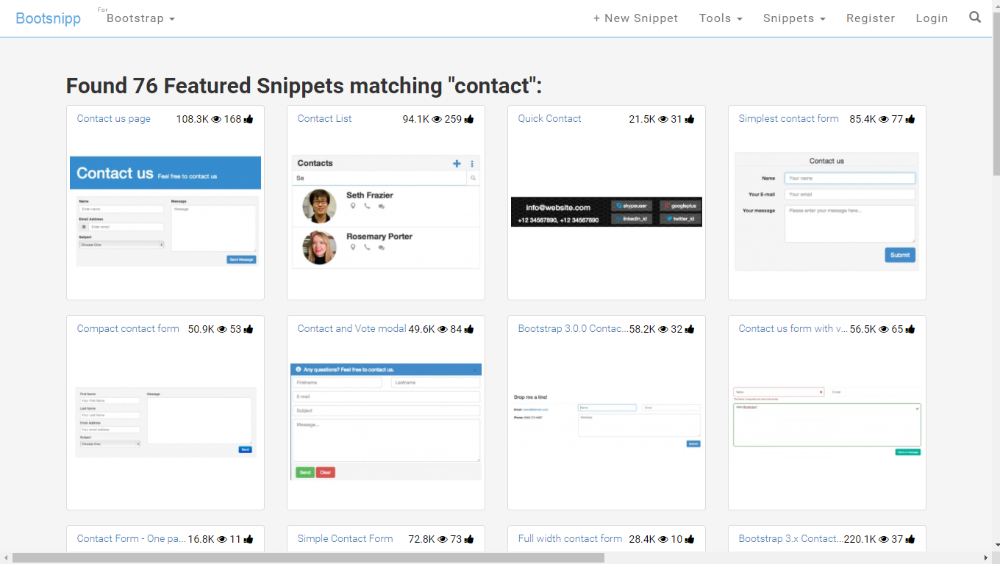
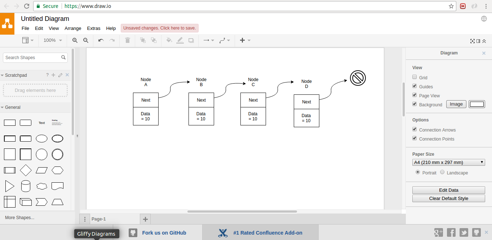
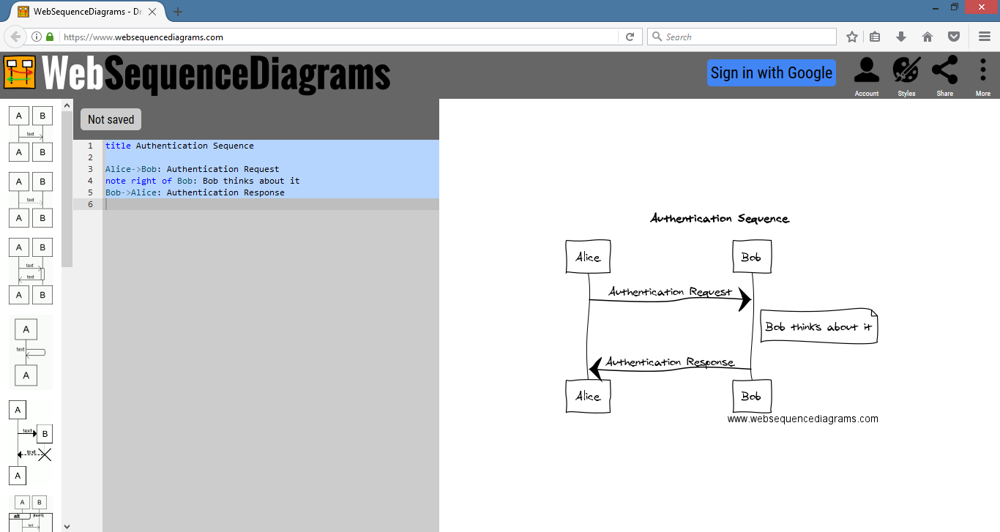
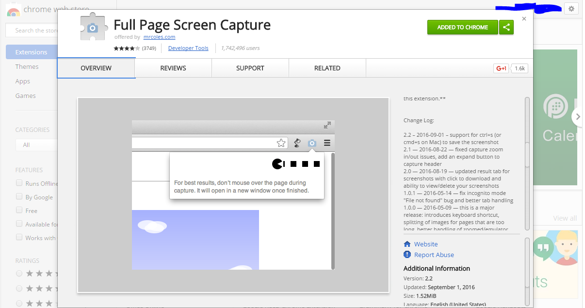
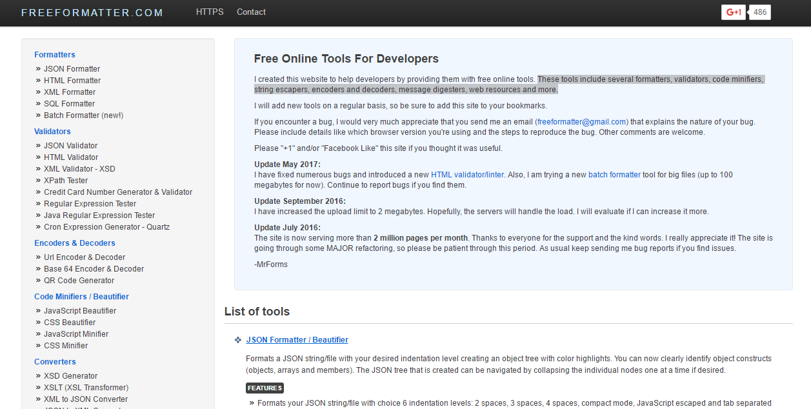

Online Tools
Few tools we rarely use and we dont want to install an application for one time use. Also sometimes we may be using a restricted machine where we cannot install softwares(of course i am telling about offices). At such times, I find the following tools handy.
Please leave a comment, if I have missed out your favourite online tool.
Web Designing Tools¶
Following are the list online tools used for prototyping websites and reusing readily available bootstrap based components
LayoutIt¶
LayoutIt! - Interface Builder for Bootstrap - Website prototype generator using Bootstrap.

Bootsnipp¶
Bootsnipp is an element gallery for web designers and web developers using Bootstrap.

UML Designing Tools¶
Gliffy¶
Gliffy Online or Gliffy Chrome App


Draw.io¶

Web Sequence Diagrams¶
Web Sequence Diagrams is an online tool to easily create Sequence diagrams using plain english.

Miscellaneous¶
Full Screen Capture¶
Full Screen Capture is a chrome extension to save the whole web page as a single image. Its just awesome. You should try it.

FreeFormatter¶
FreeFormatter hosts a suite of online tools which includes several formatters, validators, code minifiers, string escapers, encoders and decoders, message digesters, web resources and more.
